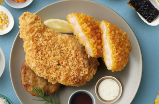
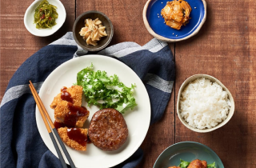

돈치고기고기 꿀조합 레시피
국내산 돼지고기로 만든 반달 돈까스, 닭다리살의
치킨 가라아게,소불고기, 제육볶음 등 각종 고기반찬과
따끈따끈한 쌀밥, 여기에 두부강된장 소스를 비벼먹으면
최상의 단짠단짠 조합 완성!

해바라기 꿀조합 레시피
점보 사이즈의 통닭다리와 통새우 4마리를 통째로 담은
통새우카츠, 청정 호주산 소불고기에 햄버그스테이크까지
총 10찬으로 구성된 풍성함 가득 담은 프리미엄 도시락.
식사의 마지막 꽃을 장식할 디저트 꿀호떡을 잊지마세요
치킨마요 꿀조합 레시피
한솥 대표 메뉴로 한 입 크기로 자른 슬라이스
치킨 가라아게를 한솥의 시그니처 마요드레싱과
덮밥소스 비벼 한 입 한 다음, 소스와 치킨의 느끼해지는
속을 깨끗하게 해줄 김치찌개 국물 한 숟가락

돈까스도련님 꿀조합 레시피
국내산 돼지고기로 만든 반달 돈까스, 소불고기, 제육볶음
닭다리살의 치킨 가라아게까지 다양한 고기반찬이 주는
느끼함을 시원하게 잡아 줄 수 있는 김치찌개 김치나베를
만들어 먹을 수 있는 든든한 한끼 레시피